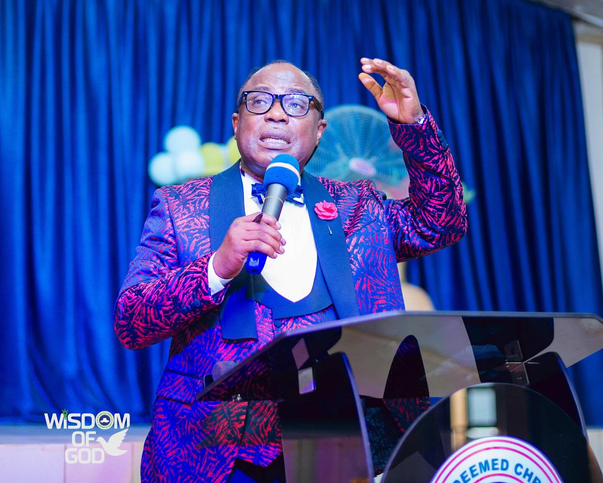
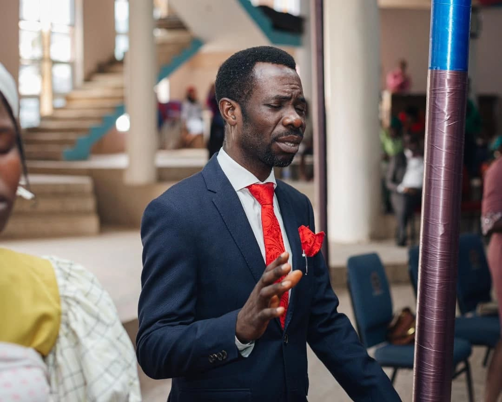
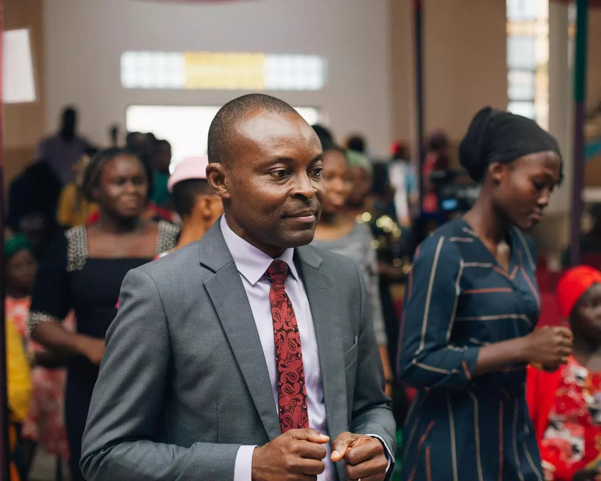
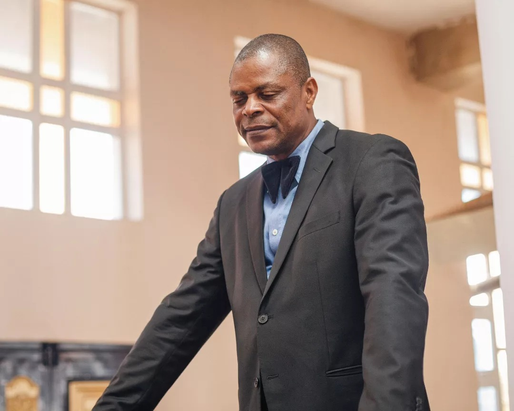
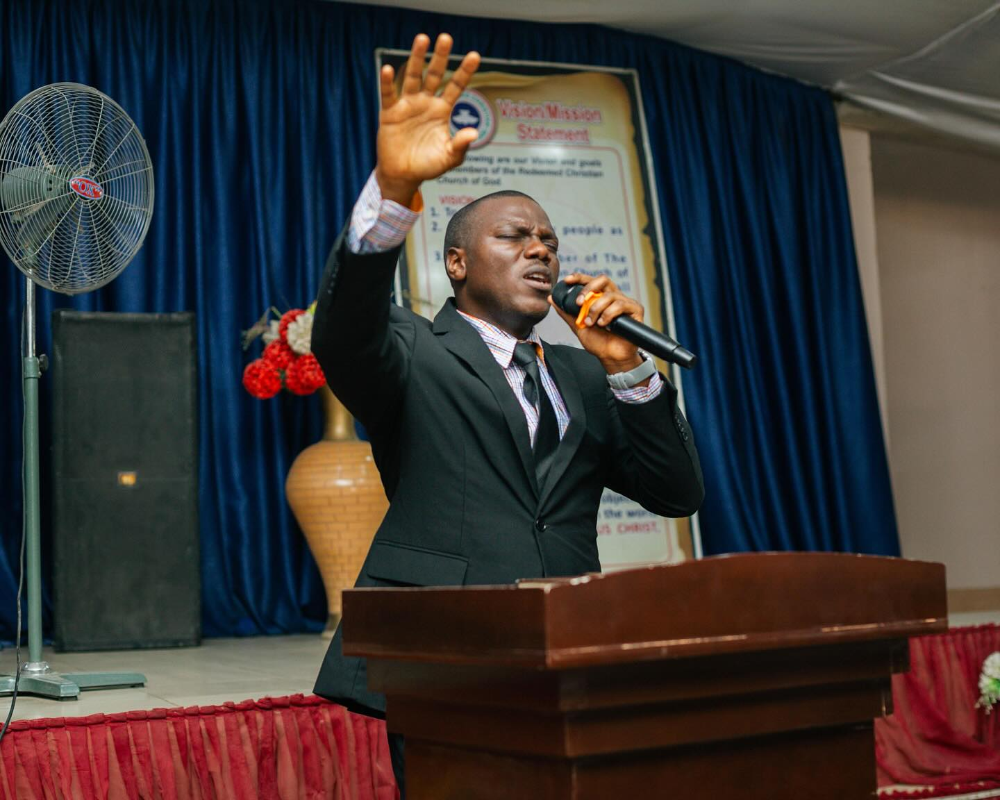
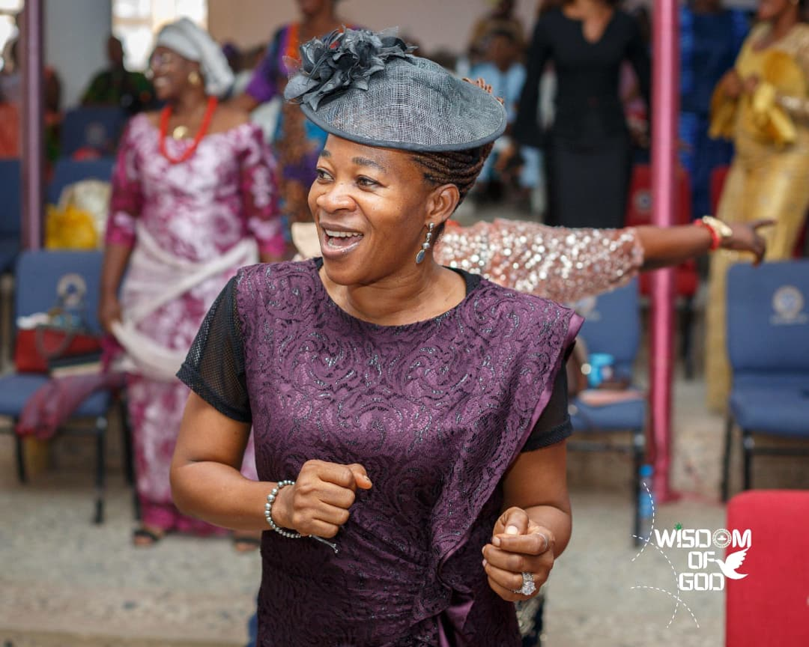

Vision
Make heaven.
To take as many people with us.
To have a member of RCCG in every family of all nations.
Rooted in scripture. Committed to discipleship, community, and global impact.
RCCG Wisdom of Parish is a place where people discover God, experience life transformation, and engage the world with compassion. Since our founding, we have focused on authentic worship, biblical teaching, and practical service to the community.
Make heaven.
To take as many people with us.
To have a member of RCCG in every family of all nations.
To accomplish No. 1 vision, holiness will be our lifestyle. To accomplish No. 2 and 3 vision, we will plant churches within five minutes walking distance in every city and town of developing countries and within five minutes driving distance in every city and town of developed countries. We will pursue these objectives until every Nation in the world is reached for the Lord Jesus Christ.
Worship, Word, Prayer, Fellowship, Evangelism and Compassion in action.
Dynamic worship and practical Bible-based teaching help us grow deeper in faith and apply biblical truth daily.
Our outreach initiatives provide education, relief, and support to families, youth, and vulnerable groups in the city.
We intentionally develop children, youth, women, men and choir ministries to build spiritual maturity and service capacity.
Whether you are exploring faith or ready to serve, come be part of our journey. Main service Sundays at 9AM and midweek on Tuesdays and Fridays.
Support Our MissionRCCG Wisdom of Parish began with a small group committed to prayer and local outreach.
Children, youth, men, and women ministries were launched to serve every age group.
Expanded community programs in education, health, and social welfare in our city.
Membership grew with multiple small groups and partnership networks.

Zonal Pastor

Assistant Pastor

Assistant Pastor

Assistant Pastor

Youth Pastor

Choir Director